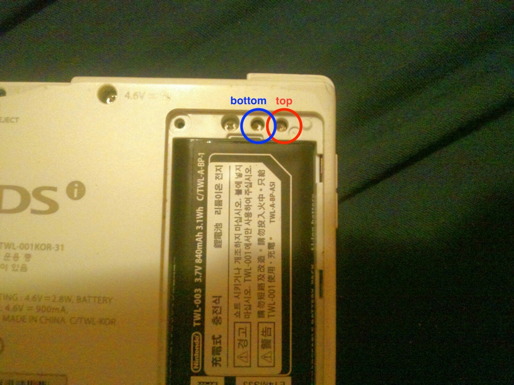

Description
One or more screens appear to be faded/washed out, or they are flickering.This is because the potentiometers that control the screen brightness and contrast are improperly adjusted.
Solution
You will have to adjust the potentiometers (see photo below). Gently turn the potentiometers with a JIS B 1012 screwdriver until the screens look normal. If you do not have the right screwdriver, a Philips 00 will also work. You will have to be very careful though as the Philips screwdriver is slightly the wrong shape and can break the potentiometers.